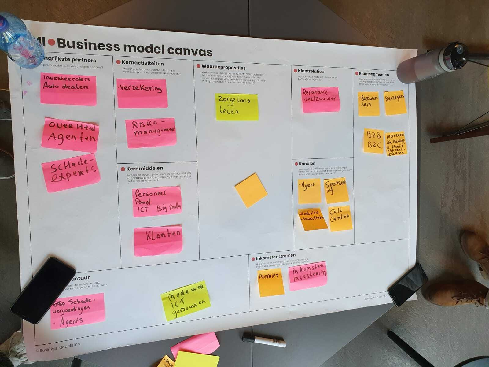

Business model Canvas Axa
In dit hoofdstuk ga ik het hebben over de workshop van Geert Rensen(eigenaar van Be informd).
Workshop Geert Rensen
Tijdens de wokshop van Geert Rensen heb ik samen met een groepje aan een casus van Axa moeten werken. Axa is een verzekeringsmaatschappij die actief is in Turkije
De casus van Axa ging over dat ervaak fraude werd gepleegd met betrekking tot schade claims. Wij moesten een oplossing verzinnen hoe deze fraude verminderd kon worden.
Eerst moest wij een Business model Canvas opstellen voor Axa. De volgende Business model Canvas hebben wij gemaakt:
Oplossing
De oplossing die ik samen met mijn project groep bedacht heb, is dat we een beacon installeren in de auto's de verzekert zijn. De beacon kan de ernst van schade bepalen en vervolgens kijken welk bedrag er uitgekeerd moet worden. Door onze oplossing zullen de fraude van schade claims vermindert worden.